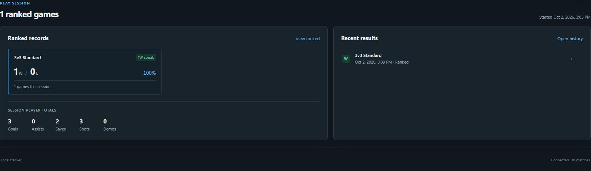
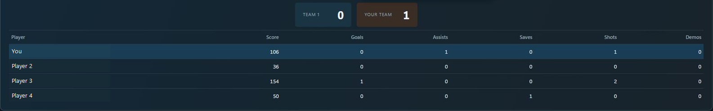

Every playlist. Its own record.
Keep your Doubles run separate from your Standard games. Wins, losses, win rate, and streaks stay with their playlist.
Your second-monitor companion.
Wins. Losses. That streak you’re trying to keep.
See your Rocket League session at a glance.
Free for Windows. No tracker account.
The answer, without doing the math.
Your playlist records, recent results, and player totals. Right beside your game.

Keep your Doubles run separate from your Standard games. Wins, losses, win rate, and streaks stay with their playlist.
Midnight doesn’t reset your run. A play session stays together across modes and short tracker restarts, until your inactivity gap ends it.
See the latest results and your session player totals. No spreadsheet. No trying to remember the last six games.
While you’re in a match
Live score and clock. Both teams.
Every player’s available scoreboard stats.
Your own row, easy to find.

Score, goals, assists, saves, shots, and demos, where available. The numbers the game shares, presented together.
Keep the live match in view while you play. Between matches, that space returns to your session summary.
Tonight’s run becomes something you can come back to.
Browse past play sessions, then open a match for its result, team scores, and available player stats. Ranked and casual history stay distinct.
Overview brings together your selected account’s lifetime ranked record and win rate, with a breakdown by playlist. Account histories stay separate.
Review uncertain results and correct a match when needed. Your summaries and exports reflect the correction.
Records stay local. Export your match data, make a backup, and restore it when you move PCs. No cloud account required.
From one ranked grinder to another.
A GC1 player. A familiar habit.
“Am I up or down?”
That was the whole idea.
I’m a GC1 ranked grinder. One of my favorite things about BakkesMod was the session-tracker plugins. A quick glance, and I knew how the day was going.
I missed that. Tracker Network didn’t quite fit what I wanted for my own sessions, so I built something to keep beside the game.
Rocket League Tracker uses the local Stats API the game exposes. It’s a small Windows companion for following the session you’re in, and keeping the games that got you here.
Free for Windows. Built by a player.
Check release availabilitySee available builds on GitHub Releases.
Extract the Windows package, keep its files together, and open the tracker.
Setup guides you through the local Stats API and confirming your game account. Restart Rocket League if the API setting changes.
Leave the tracker running while you play. It records the matches it observes; earlier games can’t be recovered.
Still taking shape
I’m exploring deeper analytics, teammate trends, and what optional AI insights could add. Ideas for the future, not features in today’s app. No release dates yet.
Want to support the next update? A coffee goes a long way. Always optional. The tracker is free.
Optional support through Buy Me a Coffee.
Buy me a coffee